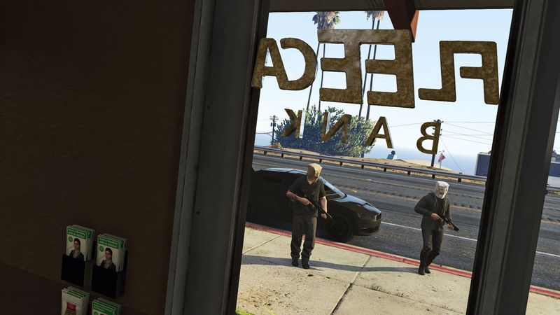
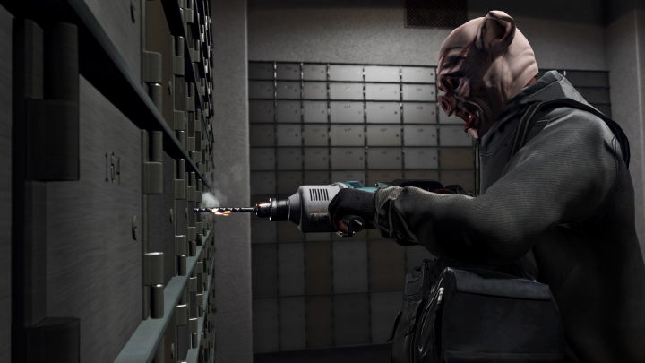
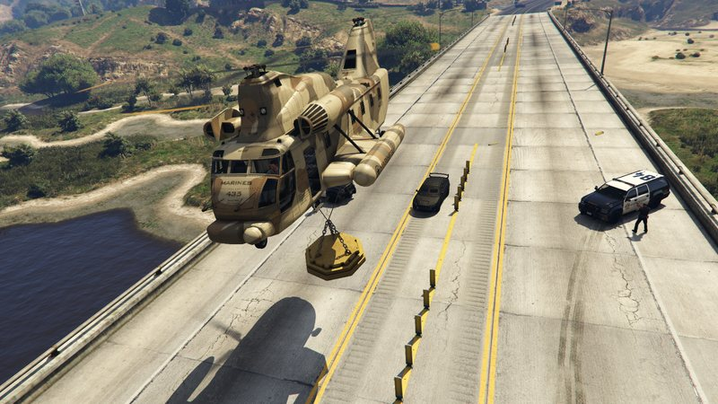

The Fleeca Job
El asalto a la sucursal de Fleeca en Banham Canyon. Uno conduce y controla a los rehenes; el otro hackea la seguridad y taladra la caja de seguridad 167. Después, huida bajo el Cargobob de Eddie Toh.

«Uno de vosotros conduce y mantiene a raya a la poli. El otro entra en el banco, va a la caja de seguridad concreta. Os subís a ese coche blindado rápido y os largáis de allí.»
Descripción
El golpe final del Fleeca se juega con dos personas y dos roles: conductor y taladrador. Por defecto, el anfitrión actúa como taladrador con un 60 % del botín y el invitado como conductor con un 40 %, aunque los porcentajes se pueden cambiar antes de empezar.
El conductor lleva el Kuruma blindado hasta la sucursal de Fleeca en la Great Ocean Highway. Durante el trayecto, el taladrador hackea el sistema de seguridad con el mismo minijuego de la preparatoria y desbloquea la cámara acorazada desde el teléfono. Al llegar, ambos se ponen las máscaras y entran.
El conductor se encarga de los rehenes: debe mantener alta la barra de intimidación y destruir las cuatro cámaras del techo con la escopeta. Si mata a un rehén o la intimidación cae al mínimo, el cajero activará la alarma. Mientras tanto, el taladrador va a la parte trasera y abre la caja de seguridad 167 con el taladro, cuidando que la broca no se sobrecaliente.
Al abrir la caja, salta la alarma y el equipo recibe tres estrellas de búsqueda. Ambos vuelven al Kuruma y huyen entre controles policiales hasta el puente de Zancudo, donde Eddie Toh espera con un Cargobob equipado con un electroimán. Hay que igualar su velocidad y pasar por debajo para que el coche quede enganchado y el equipo escape.
Roles
Conductor
Kuruma · Rehenes- Lleva el Kuruma hasta el banco y espera a que el taladrador hackee.
- Ponte la máscara, entra y destruye las 4 cámaras del techo.
- Mantén la intimidación alta sin matar a ningún rehén.
- Cuando el taladrador salga, conduce hasta el punto de recogida.
- Iguala la velocidad del Cargobob y pasa bajo el imán.
Taladrador
Hackeo · Caja 167- Completa el hackeo de seguridad durante el trayecto.
- Desbloquea la cámara acorazada desde el teléfono.
- Entra en el banco y ve a la caja de seguridad 167.
- Taladra los 4 pasadores sin sobrecalentar la broca.
- Vuelve al Kuruma y escapa con el conductor.

Requisitos
- Haber completado las 2 preparatorias: Scope Out y Kuruma.
- Equipo de exactamente 2 jugadores.
- El líder paga $11.500 de coste inicial. La primera vez Lester lo cubre.
- Tener el Kuruma blindado preparado y llevar máscaras.
- La escopeta de bombas la proporciona la misión.
Objetivos · Conductor
- Lleva al taladrador al banco de Fleeca.
- Espera a que el taladrador desbloquee la cámara acorazada.
- Ponte la máscara y entra en el banco.
- Destruye las cámaras.
- Controla a los testigos.
- Espera a que el taladrador suba al Kuruma.
- Ve al punto de recogida.
- Conduce bajo el Cargobob.
Objetivos · Taladrador
- Ve al banco de Fleeca.
- Desbloquea la cámara acorazada.
- Ponte la máscara y entra en el banco.
- Ve a la caja de seguridad.
- Taladra la caja de seguridad.
- Sube al Kuruma.

Consejos
- Conductor: destruye las cámaras en cuanto entres; son cuatro y están en el techo.
- Conductor: apunta al aire o a las cámaras, nunca a los rehenes. La alarma arruina el sigilo.
- Taladrador: suelta el gatillo cuando la broca se ponga roja y deja que se enfríe.
- Taladrador: el hackeo previo es el mismo de Scope Out; practicarlo antes ahorra tiempo.
- Ambos: el Kuruma aguanta mucho, pero no lo expongas a explosivos.
- En la huida, seguid el GPS y no os paréis ante los controles policiales.
- Para el desafío élite: menos de 5:20, nadie muere, daño del vehículo inferior al 6 %, sin reinicio rápido y sin saltar viaje.
Condiciones de fallo
- Matar a un miembro del público.
- Que el conductor o el taladrador abandonen la misión.
- No escapar con Eddie Toh.
- Quedarse sin vidas.
- Alertar a la policía antes de tiempo.
Fuente: GTA Wiki. Capturas: GTA Wiki / Rockstar Games. Los pagos pueden variar según dificultad, bonificaciones semanales y reparto del botín.